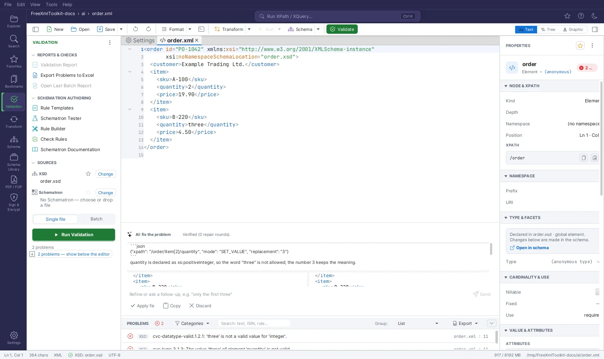

AI and automation
AI on your terms
An assistant whose answers are checked before you see them, a server that gives AI agents real XML tools, and a command line for your build pipeline.

AI assistant
Answers that are checked first
The application compiles, runs, validates and compares what the model proposes, and sends the errors back for up to three repair rounds. Nothing is applied or saved without you.
- Explain and fix validation problems
- Turn a question into XPath or XQuery
- Generate an XSLT stylesheet from a target sample
- Off by default; a local model (Ollama, LM Studio) or a provider you have an account with
- Data levels and a preview of every request decide what leaves your computer
MCP server
Give your agent XML tools
fxt-cli mcp offers validation, XPath, XQuery, XSLT, XSpec, Schematron, schema lookups and compare to Claude Code and any other client of the Model Context Protocol. The agent checks its own work instead of guessing.
- Runs on your machine over standard input and output, no network port
- Read-only and sandboxed to the folders you name
- Calls no language model and sends nothing anywhere
# register with Claude Code $ claude mcp add fxt -- fxt-cli mcp --root . # list the tools $ fxt-cli mcp --list-tools
Command line
The same engines in your build
fxt-cli is installed with the application. It validates, transforms, queries, runs XSpec tests and scenarios, compares, signs and encrypts - and reports as text, JSON, JUnit or SARIF.
$ fxt-cli validate data/ --xsd schema.xsd -f junit -r report.xml $ fxt-cli transform in.xml -s style.xsl -o out.html $ fxt-cli xspec tests/invoice.xspec -r results.xml $ fxt-cli compare expected.xml actual.xml